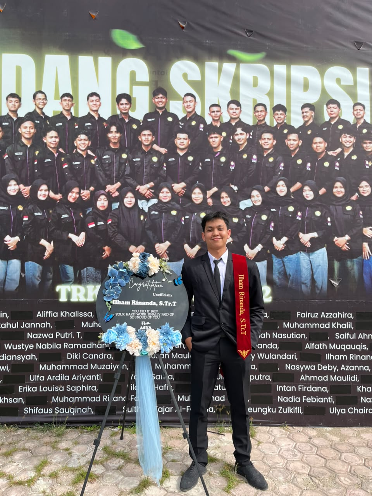

➜ ~ whoami
< Mahasiswa D4 Teknologi Rekayasa Komputer Jaringan />
Mahasiswa semester akhir Program Studi D4 Teknologi Rekayasa Komputer Jaringan di Politeknik Negeri Lhokseumawe yang memiliki minat pada Web Development, Mobile Development, Networking, dan Cyber Security. Memiliki pengalaman magang selama 6 bulan di PT PLN Icon Plus (ICONNET) sebagai Sales Retail Intern. Saat ini sedang mengembangkan penelitian Tugas Akhir mengenai Implementasi dan Analisis Two-Factor Authentication (2FA) untuk Mitigasi Serangan Brute Force pada Layanan SSH.
Projects
Bulan Magang
IPK
TRKJ

quick_info
{
"nama": "Ilham Rinanda",
"kampus": "Politeknik Negeri Lhokseumawe",
"program_studi": "D4 Teknologi Rekayasa Komputer Jaringan",
"semester": "7",
"ipk": "3.72",
"pengalaman": "PT PLN Icon Plus",
"fokus": [
"Web Development",
"Flutter",
"Networking",
"Cyber Security"
]
}
Saya merupakan mahasiswa semester akhir Program Studi D4 Teknologi Rekayasa Komputer Jaringan Politeknik Negeri Lhokseumawe. Memiliki ketertarikan pada bidang pengembangan website, mobile development, jaringan komputer, serta keamanan sistem.
Selama menjalani program magang di PT PLN Icon Plus, saya bertugas melakukan Outbound Call, Customer Visit, pendataan pelanggan, serta pengelolaan data pelanggan menggunakan sistem ICRM.
Saat ini saya sedang menyelesaikan penelitian Tugas Akhir mengenai implementasi Two-Factor Authentication (2FA) menggunakan Google Authenticator untuk meningkatkan keamanan layanan SSH dari serangan brute force.
Selengkapnya →my_skills
Beberapa bahasa pemrograman, framework, database, dan tools yang sering saya gunakan dalam proses pengembangan aplikasi.
highlight
Membangun website menggunakan HTML, CSS, JavaScript, PHP, Laravel, serta database MySQL.
Mengembangkan aplikasi mobile menggunakan Flutter dan Firebase dengan tampilan modern dan responsif.
Fokus pada keamanan layanan SSH, pengujian brute force menggunakan Hydra, serta implementasi Two-Factor Authentication (TOTP).
Terima kasih telah mengunjungi website portofolio saya. Saya selalu terbuka terhadap kesempatan magang, freelance, project, maupun diskusi seputar Web Development, Flutter, Networking, dan Cyber Security.